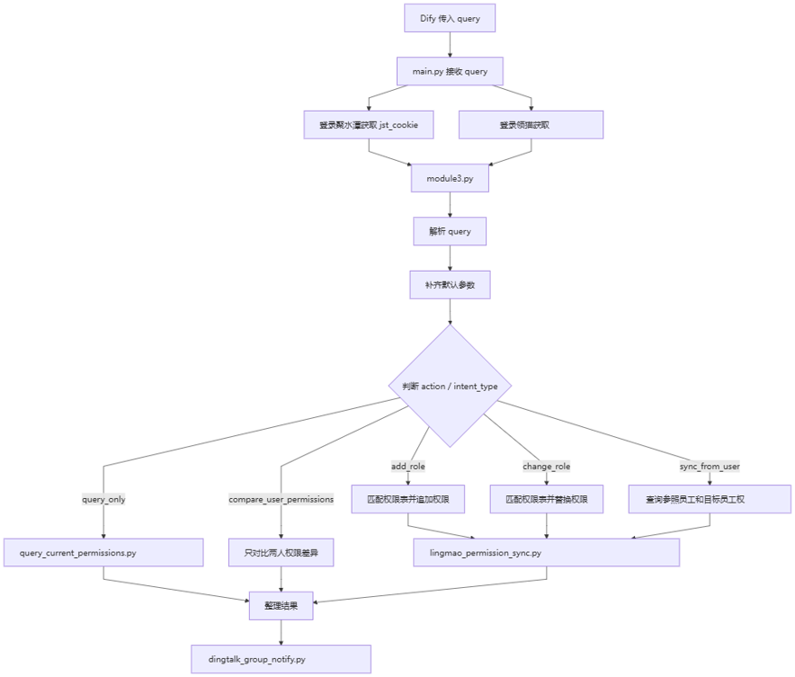

03 RPA & Python
RPA 接收 Dify 请求后的判断与脚本执行
main.py 负责接收参数和获取登录态，module3.py 负责解析参数和判断动作，查询与同步脚本负责业务系统处理，最后由 dingtalk_group_notify.py 将结果回传钉钉。

1. Dify 传给 RPA 的格式
{
"query": "intent_type=...\nemployee_name=...\ntarget_system=...\naction=...\n..."
}影刀不直接接收多个零散字段，而是接收一个完整 query 字符串，再交给 Python 解析。
2. main.py 的职责
• 接收 Dify 传入的 query。
• 登录聚水潭并获取 jst_cookie。
• 登录领猫并获取 lingmao_cookie。
• 调用 module3.main(query, jst_cookie, lingmao_cookie)。
3. module3.py 的职责
解析 query、补齐默认字段、判断 action 和 intent_type、查询员工信息、匹配钉钉权限表、查询当前权限、调用不同权限脚本、生成回执并发送钉钉消息。
| 动作 | 处理方式 |
| query_only | 只读查询当前权限 |
| add_role | 按权限表追加角色 |
| change_role | 按模板替换角色 |
| sync_from_user | 参考员工同步权限 |
| compare_user_permissions | 只对比，不执行同步 |
| remove_role | 删除类操作，要求人工确认 |
| unknown | 返回缺失字段或不支持提示 |
4. 脚本职责
| 脚本 | 主要职责 |
| query_current_permissions.py | 只读查询领猫和聚水潭当前权限 |
| lingmao_permission_sync.py | 领猫角色同步、保存与执行后校验 |
| jushuitan_permission_sync.py | 聚水潭权限组同步、保存与校验 |
| get_moka_employee.py | 查询员工基础信息 |
| onboarding.py | 查询钉钉权限表和部门配置 |
| dingtalk_group_notify.py | 发送钉钉群回执 |
| linkmore.py / jushuitan.py | 仅复用业务系统接口配置，不调用旧业务流程 |
5. 安全与验证边界
Cookie 只从影刀登录态获取；Token、Cookie 和 Secret 不写入页面文本或执行日志。查询和对比可只读执行，删除、取消、降权等操作需人工确认，正式同步后需要再次查询权限验证结果。